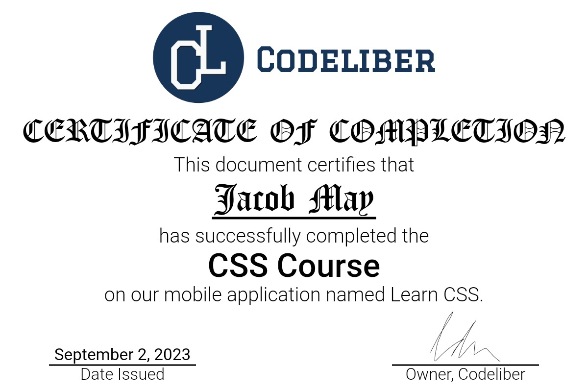
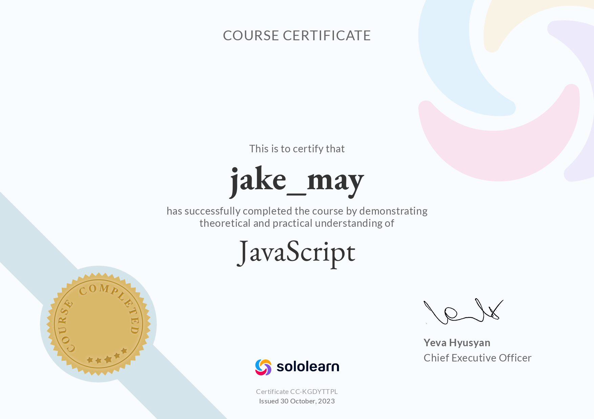
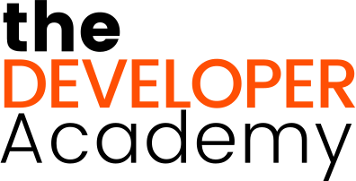
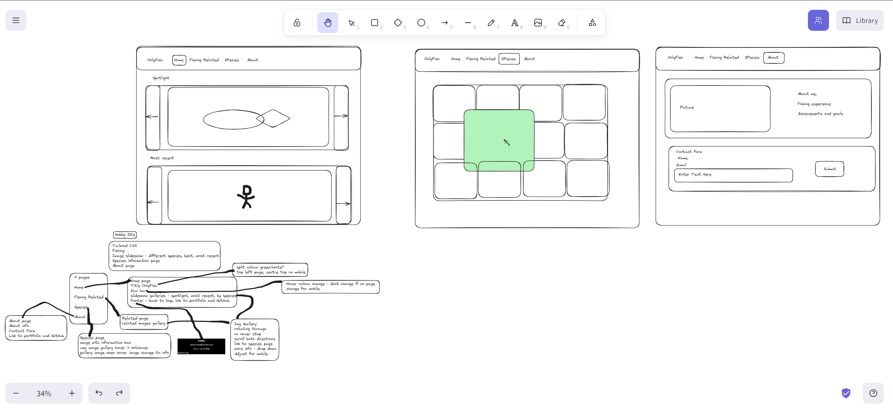
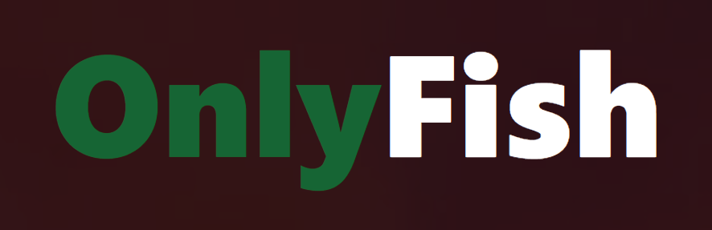
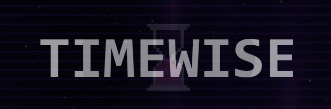

Hi, I'm Jake.
Welcome to my portfolio.
I started learning to code in August 2023 and this is my journey so far.
Discover more by hovering over the grey boxes.
August
So it begins...
Before I began learning any programming languages, I spent a few days watching videos and reading up on the best ways to get into coding as a career. I focused on different paths into the industry and potential future careers. One of the main pieces of advice I repeatedly heard was to create projects, to practice and show what skills you've been learning. This gave me the idea for this timeline to show my progression over time.
Web development seemed like an appropriate way to get started so I decided to begin learning with HTML, CSS and Javascript.

I only had a chromebook in the beginning so one af the ways I started learning was through coding apps. The main ones I used were Sololearn, Mimo and Codeliber.
Look out for completed courses along the timeline!
September

I did a little HTML and CSS when I was younger so picked up the basics again pretty quickly.
What I found most interesting in these early weeks was animations with HTML and CSS only.
Click the the black spinning circle to see one of my animations.

Web Development course completed! Confident in HTML and CSS however only covered some basic Javascript.
I've also been using Chat GPT to aid my learning. Mainly to give examples of code and for help when I'm stuck on a problem. Its great for reviewing my code and while not correct 100% of the time still a very useful tool.
PLAN: Use these skills to build a website.

Tech for everyone course complete, and recap of the basic Javascript skills.
Hello World
.jpg)
October
Onto October and after buying a Windows laptop and finally being able to download VS code, I decided to make a simple website game. This looked like a great way to bring all the skills I'd learnt so far together.
It took about 3-4 weeks to complete my Find Bluefish game and out of the many challenges I came across the one that took me the longest to solve was the game fading to black while keeping inside the circle visible. After 3 days of trying different ideas and AI being no help, I was messing around with a box shadow on another element and I thought why not make a completely dark shadow around the circle but make it larger than the game area. 2 mins later problem solved!
Another outcome of this project was learning about responsive layouts for different screen sizes and devices. When I put the completed version online it would not work correctly on a mobile so I spent about a week adjusting the site. Its still not perfect and i'm sure I could improve on it but its time to move on.
I put it online with GitHub, click the fish to play!
I did look into using PHP and MySQL to make a global leaderboard with a database however I'm putting that to one side as a potential future project.
Chat GPT helped a lot with the Javascript on this so I'm going to focus on making more projects with JS.
PLAN: MORE JAVASCRIPT!

Full Javascipt course complete! Becoming competent with the basics however ES6 needs more work.
November
.jpg)
ES6 becoming a little easier.
Now I've got a good baseline of web developent skills Its time to make a start on my portfolio and move onto other projects.
PLAN: Begin portfolio
Portfolio started, this little animation was fun to make. I used 10 keyframes so that each bounce is 1 second. An issue I faced was that the z-index transition was not instant at each turning point, it would slowly transition through the letters as it was moving. To fix this, I exponentially increased the values each time to make the back/front transition faster.
If I were to do this again, I'd use 20 keyframes with 2 frames at each turning point, for example, 10%+11%, 20%+21%, 30%+31%... I used this method for the rotation on the Bluefish animation in the October section, and it would have saved me a lot of time.
PLAN: Keep updating timeline/portfolio with courses and projects.


On the 27th of November, I started a Web Development Bootcamp with The Developer Academy. I had to complete the FreeCodeCamp courses as prerequisites.
The course is 4 months, 5 days a week and fully remote. It looks like a great next step from what I've been learning so far. Hopefully by March a new job should be in my sights.

December
Each week on the course, we are going to be given a project to complete. Week 1 was a hobby website using Tailwind CSS. It's a good way to quickly build websites, and I enjoyed the simplicity of it.
I tried my hardest to only use HTML and Tailwind on this project but did have to link a JavaScript Flowbite stylesheet with one script line to make the gallery carousel work.
We learned how to use GitHub correctly, so for every step of this build, I would create an issue, copy the branch into VS Code, then push back to GitHub. Using Bash and the terminal more regularly, which is starting to make me feel like a 'real' coder. I planned out the site on Excalidraw and focused a lot on responsive designs too. I did create a contact form on the about page; however, it doesn't send to anywhere when submitted.
Click the OnlyFish text to view the site.


Good recap of basic Javascript and a Regex course this week.
We each made a quiz for our projects. I decided to do a general knowledge one with a timer twist. I'm really happy with how the site turned out and felt a lot more comfortable using JS.
Again, I'd like to do an online leaderboard for this but there's plenty to do on the course right now. If I come back to this in future I might make an easy/hard mode with higher or lower start times. To keep users coming back I'd potentially do daily or weekly updates of the questions which would be very easy to do.
Click the TimeWise text to view the site.

To test how easy it would be to change the quiz, I made a few more...